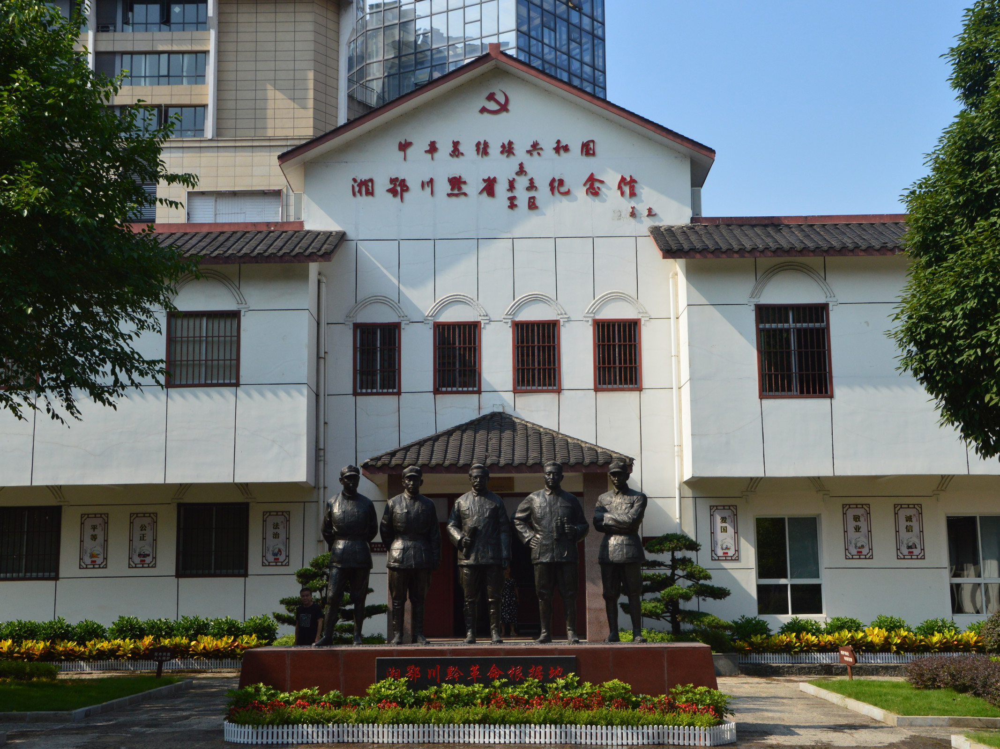
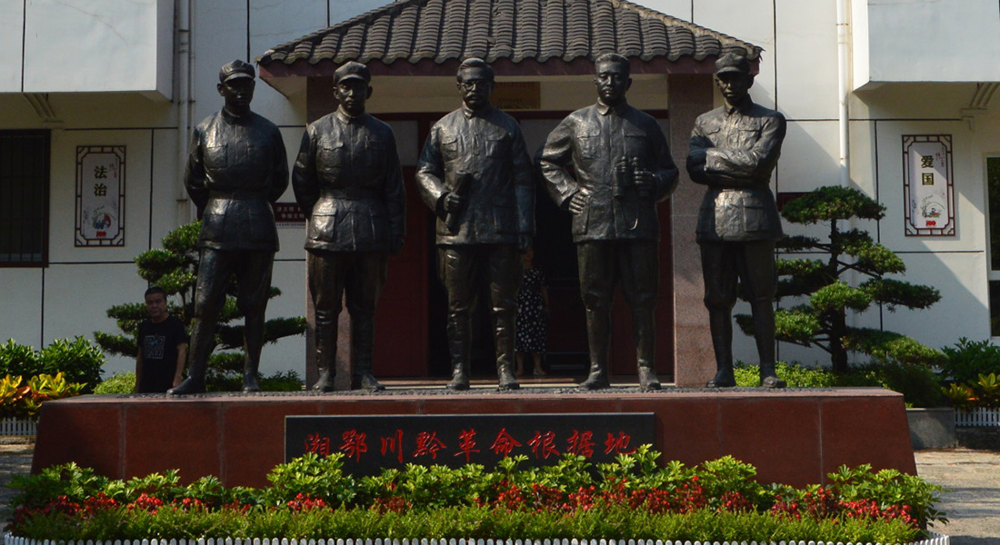

简介：湘鄂川黔革命根据地纪念馆参观原系民国7年（公元1918年）芬兰牧士建的天主堂，3栋共15间木结构平房，四周有砖墙环护。 1934年11月24日，中国工农红军二、六军团在任弼时、贺龙、萧克、王震等领导下，一举解放大庸县城，于26日成立临时省委，12月1日在天主堂内成立湘鄂川黔省革命委员会，领导湘鄂川黔革命根据地31个县的反围剿斗争，沉重地打击了国民党反动派和地方封建势力，为中华民族的解放事业作出了卓越贡献，在中国人民革命斗争史上写下了光辉灿烂的一页。 为缅怀先烈功绩，弘扬革命精神，中共张家界市永定区委和区政府于91年夏发动募捐修复湘鄂川黔省委、省军区、省革命委员会旧址，并新建纪念馆，于1993年12月26日落成开馆。 2001年6月，湘鄂川黔革命根据地纪念馆被中宣部公布为第二批全国爱国主义教育基地。
湘鄂川黔革命根据地纪念馆
2021年7月16日于张家界
江南柱石，红色摇篮
第三天，为收集红色故事，传承红色文化，计通学院赴潇湘红色文化区域数字一张图开发专业实践团和带队老师易亭亭依旧在路上，我们抵达了张家界的湘鄂川黔革命根据地纪念馆。

入门就是任弼时、贺龙、萧克、王震、关向应的铜像。纪念馆的各个展厅，一幅幅珍贵图片，一段段英雄事迹，一件件斑驳的实物，记载着80多年前任弼时、贺龙、萧克等同志英勇战斗的光辉革命历程。
通过解说员的讲解，大家认真聆听了红二、红六方面军艰苦卓绝的革命斗争史，而印象最深刻的是关于红二方面军长征的故事。故事讲述的是最小红军，刚出生18天的贺婕生将军参加长征的历程。1935年11月19日，她跟随红二方面军从湖南桑植县刘家坪出发长征，在乌蒙山，部队趁夜突出重围，为了保护我方红军安全，保证她在几十里山路包围圈不能出声。她被母亲用小被子死死捂住，差点背过气去。过了封锁线，在一个山垭口，两边山头上突然出现了敌情。贺龙元帅抱着拍马迎战，就在贺龙元帅指挥部队迎敌的时候，她像个飞起来的包裹，从贺龙元帅怀里被颠了出去，重重地摔在草丛中，被其他红军战士捡回来时奄奄一息。翻雪山，过草地，在那恶劣的条件，她坚强的活了下来，抵达陕北，三大主力军胜利会师。
“红军不怕远征难，万水千山只等闲。五岭逶迤腾细浪，乌蒙磅礴走泥丸。金沙水拍云崖暖，大渡桥横铁索寒。更喜岷山千里雪，三军过后尽开颜”。短短56字，写出红军长征之苦，红军有着革命必胜的信念去长征。这个几天，实践团的成员每天睡5个小时左右，每天在外奔波，但也每天吃饱，但我们觉得都比较累，更别说红军长征，每天都是步行前进，走的甚至是人迹罕至、环境恶劣的地方，经此几天，我们对长征精神有了更加深刻的体会。离开之际，为了更好地弘扬红色文化，传承红色文化精神，湘鄂川黔纪念馆赠送了我们基本当地特色红色文化书籍，供我们调研学习，我们此行收获颇丰。